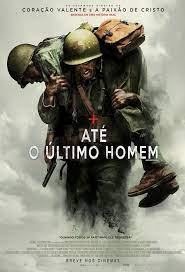

ATÉ O ÚITIMO HOMEM
.png)


guerra
drama
biografia
/imagemI.png)
99+ fotos
/video (1).png)
17 videos
Em Até o Último Homem, durante a Segunda Guerra Mundial, o médico do exército Desmond T. Doss (Andrew Garfield) se recusa a pegar em uma arma e matar pessoas, porém, durante a Batalha de Okinawa ele trabalha na ala médica e salva mais de 75 homens, sendo condecorado. O que faz de Doss o primeiro Opositor Consciente da história norte-americana a receber a Medalha de Honra do Congresso.
Marco Tello Jr
É um filme extraordinário que cativa e emociona do início ao fim. Dirigido por Mel Gibson, ele conta a história inspiradora de Desmond Doss, um soldado corajoso e determinado que, mesmo se recusando a portar armas, salva inúmeras vidas durante a Segunda Guerra Mundial. Uma das maiores qualidades do filme é a performance brilhante de Andrew Garfield no papel de Doss. Sua atuação é cativante e convincente, transmitindo perfeitamente a devoção e a fé do personagem. É impossível não se envolver emocionalmente com sua jornada e se maravilhar com sua coragem e compaixão diante do horror da guerra.
A direção de Mel Gibson é impecável, especialmente nas cenas de batalha. Ele captura com maestria o caos e a tensão dos campos de combate, oferecendo sequências realistas e visceralmente impactantes. As cenas são carregadas de emoção e intensidade, mantendo o espectador completamente envolvido na trama. O roteiro do filme é comovente e repleto de momentos poderosos. A história de Desmond Doss é contada de forma cativante, explorando sua infância, sua motivação e sua luta para ser reconhecido como um soldado mesmo sem empunhar uma arma. O filme transmite mensagens poderosas sobre coragem, fé e o poder do indivíduo em fazer a diferença.
Um filme que emociona e inspira, deixando uma marca duradoura no espectador. É uma obra que combina uma narrativa poderosa, performances excepcionais e uma direção habilidosa. A história verídica de Desmond Doss e seu heroísmo é contada de forma brilhante, fazendo deste filme uma experiência cinematográfica inesquecível.